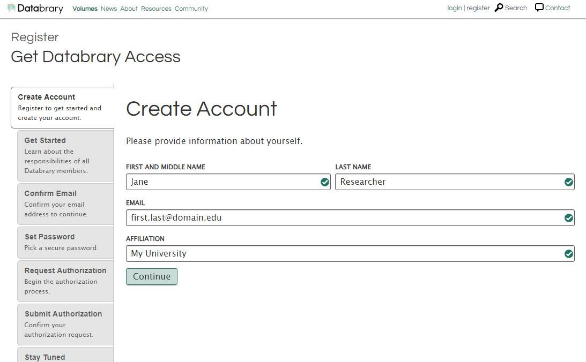

Requesting access as affiliates
Ensuring that data is used appropriately is a core principle of Databray. Users will be required to register an account and obtain authorization to gain further access.
Registering for Databrary Access As Affiliates
To start the authorization process on Databrary, please complete the Registration Form or click on the green ‘Register’ button or click on ‘register’ on the top right of the menu bar at databrary.org.
Creating an account
Fill out the Create Account form with your full name, valid institutional email address, and the name of your research institution.

Read the Databrary Access Agreement, Annex I, Annex II, and Annex III and check the box to agree to the access terms.

Go to your email box, locate the auto-generated email from Databrary, and confirm your email. If you don’t receive the email within a few minutes, check your spam folder.


Choosing a password
Next, please choose a password. 
We strongly recommend using a password generation or manager program or the password manager built-in to many modern web browsers. Keep your account credentials secret and do not share them with anyone. Each Databrary user must have their own login and password.
Requesting authorization
Every Databrary user who seeks access to restricted data must request and be granted authorization for that access. As a restricted access data library, Databrary need to make sure that users are empowered to follow the guidelines for accessing the data.
Remember, Authorized Investigators must secure authorization from an institution; Affiliate must secure authorization from an Authorized Investigator!
Please read the requirements for Affiliates. Choose the radio button that accurately reflects your qualifications. If you are not certain with you status, review Determine Rsearchers Status.

It’s time for you to contact your supervisor (Authorized Investigators) for authorization. You will need authorization for further storing, sharing, or resuing data. You may also set up your Databrary profile while authorization is pending.